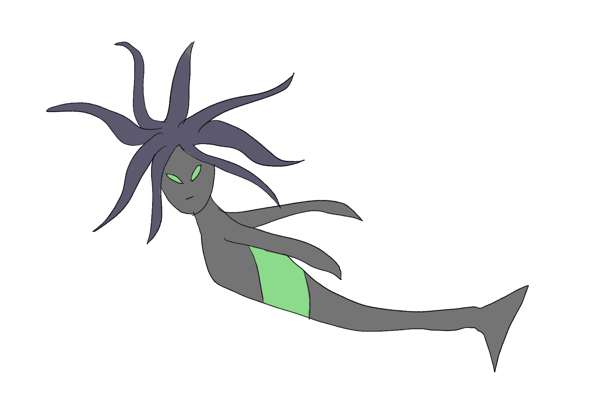

Aschismean
Instead of a discrete mode of communication, the Sirens have words like "tet" to "tot", which represent hot and cold respectively. Any blend of words represent the in-between. They are named Sirens because of their smooth, woman-like appearance.
Sirens are aquatic, with long fins. They are able to filter oxygen through their mouths and also have vocal chords they use to sing underwater.

Source for image: Wikimedia user Nickfraser, who published the file under the GNU Free Documentation License.